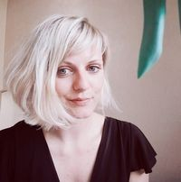

Veerle Lefevere

Summary
I'm a very vibrant, enthusiastic and passionate young woman with a quirky and warm personality.
Very eager to learn new things and always looking for new topics that inspire me.
Education
- Not graduated - KU Leuven - class of 2016
- Completed Transition year at KU Leuven - 2015
- Academic transition year Bachelor to Master in Tourism
- Graduated 'cum laude' at the College of West-Flanders Kortrijk - (2010-2014)
- Bachelor Tourism- and Recreationmanagement - 2014
- Exchange Program 'China from Within' - Beijing/Shanghai/Hanghzou (China) - Apr 2013
- Erasmus exchange program at Budapest (Hungary) - Sept-Dec 2013
- Sint-Jozefsinstituut Oostende (2009)
- 3rd grade secondary school: Tourism
Work Experience
- Service Assistant at 'Vestas Wind Offshore Belgium'
- Assistant manager at 'Hotel Ter Streep'
- Flight Attendant at 'Tuifly Belgium'
- Travel Agent at 'Connections-Eurotrain Oostende'
Skills
- Languages
- Dutch
- English
- Level: C2 (Writing and Speaking)
- French
- Team player
- Problem solving skills
- Commercial attitude
- Excellent communication skills
- Ambitious
- Flexible
Certifications
- Massage Therapist - Relaxation
- Piano - basic degree (4 years)
- Foot Reflexologist
Want to get to know me better?
Check out my hobbies